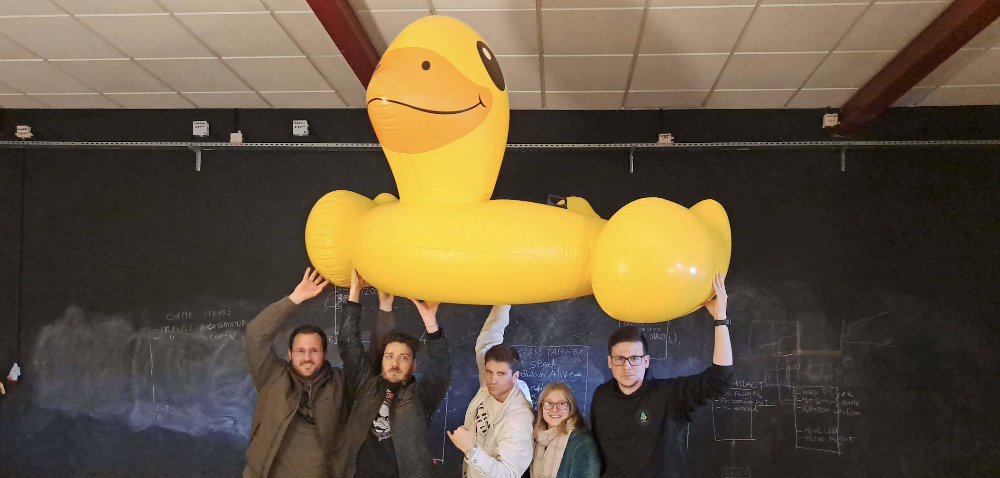

We came together with a shared vision to create a platform that offers not only romantic counseling services to users, but also a friend who is caring and considerate. Our goal is to provide users with a safe and secure space where they can seek guidance and support in matters of the heart. We believe that everyone deserves to have a fulfilling and happy love life, and our website is designed to facilitate that. Whether someone is struggling with a breakup, navigating the early stages of a relationship, or simply seeking advice on how to improve their dating skills, our implementation of ChatGPT will provide them with helpful insights and recommendations.
As a team, we are committed to providing our users with the best possible experience on our website. We have worked tirelessly to ensure that the chatbot is user-friendly, intuitive, and reliable, like a true friend. Our ultimate goal is to empower people to take control of their romantic lives and achieve their relationship goals with the help of ChatGPT's expertise.